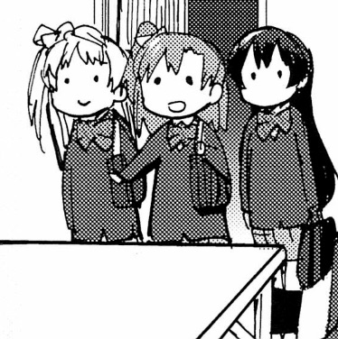

|
hihi! I'm Grady, an unfortunate Texan who's a bit too deep into the internet.  I'm a very odd person, who takes some things way too seriously or close to heart. I like to be knowledgable and educated in alot of varied things. I primarily stick to using the internet as a means to have and meet friends, as I think interacting with the culture around internet-celebs in communities is stupid and too parasocial for my taste. I'm pretty lax in most regards as I usually will accept anybody, and I get along with people of very varied backgrounds. I try not to be too intimidating or rude or harsh, and generally I avoid conflict and dumb controversies over dumb things. However, I honestly can have a bit of a superiority-complex as a whole, primarily due to dealing with rude people on the internet with less knowledge on subjects they parade and reign in. If I ever come off that way, I don't mean any harm and I care for ya. I'm an emotional person as a whole, but I wouldn't let that stop you from talking to me. I promise I'm not too bad. My primary hobby is technology and computers, where I currently own more than 30 unique machines! I have VERY rough and basic ability with C and Ruby, but I primarily mess with hardware and believe that's my strong-suite. I mostly delve into System 7-9/OS X machines, which are just Apple Macintoshes, as I just like em for various reasons. I also interact with Server hardware, and interact as a whole with vintage computing. Windows 7 is my favorite operating system, next to OS X Mavericks! They're really the peak of modern operating systems, before we went completely to hell. My main interest besides that is easily Touhou Project. I've been a fan since I was much too young to be interacting with the community, and my love for it has never faltered. I love the main games, I love the side games, I love the PC98 era especially, I love the characters, the setting, the CD's, everything. Cirno is still somehow my favorite character, even though I've been a fan long enough to know better. Merchandise is not a proper gauge of one's knowledge on a franchise, but I've probably wasted thousands as a whole on official and Doujin Touhou work.. One of my favorite things about Touhou Project as a whole is its broad Fan community, and especially it's Doujin Music Scene. I have over 100 Doujin CD's, with hundreds I still want to get. I even went to japan solely to see Sekkenya VS Cool & Create Flowering Hero, and it was probably one of the greatest experiences of my life! I live and breath this stuff. And try to at least have better insight than most posers.. Besides aforementioned Touhou junk, I mostly enjoy music from the 90's to maybe the later 2000s. Anything in that particular period. I stick mostly to Indie Rock/Alternative, but I also really enjoy J-Rock and J-pop. I obviously have interest in mostly genre's with actual instruments, but I delve into Pop/Electronic and other influences. From Wilco to Soutaiseirion I guess. My main way to listen to music is using iPods and a computer with nice HD650's, since streaming has increasingly become Not-My-Thing. For more General interests, I also like Vocaloid/General Vocal Synths. This is more a waning interest due to how horrible it's modern scene can be nowadays, but I'll always have some love for the music and I own a Project Diva Arcade Cabinet. |
Thank you for reading through this all. I know it's a fair bit, especially for the brainrotted masses, but I appreciate you taking your time to look through it all. I hope I don't come off as too rude, but I like honesty and not coming off falsely.
I would appreciate going through Lists & Links to see other things I like and all. I also now have a FAQ! Which you can click here for. |